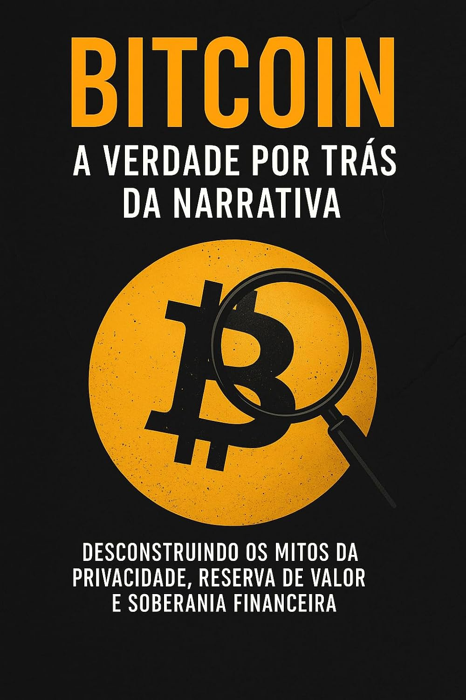

Descrição
Entenda por que ele não funciona como moeda, falha como reserva de valor e se sustenta, na prática, como ativo de especulação extrema.
Livro
O que o mercado não quer que você saiba.
O Bitcoin é vendido ao mundo como promessa de liberdade financeira, reserva de valor, privacidade e independência dos governos. Este livro traz análise direta, crítica e embasada sobre o storytelling que o transformou em fenômeno global.

Entenda por que ele não funciona como moeda, falha como reserva de valor e se sustenta, na prática, como ativo de especulação extrema.
Silk Road, Bitfinex, golpes, fraudes, rastreamentos e narrativas corporativas entram na análise.
Convite à reflexão, ao senso crítico e à responsabilidade financeira.
Este não é um livro contra tecnologia nem contra mercado cripto. É um convite à reflexão e ao entendimento do que se está comprando antes de investir.